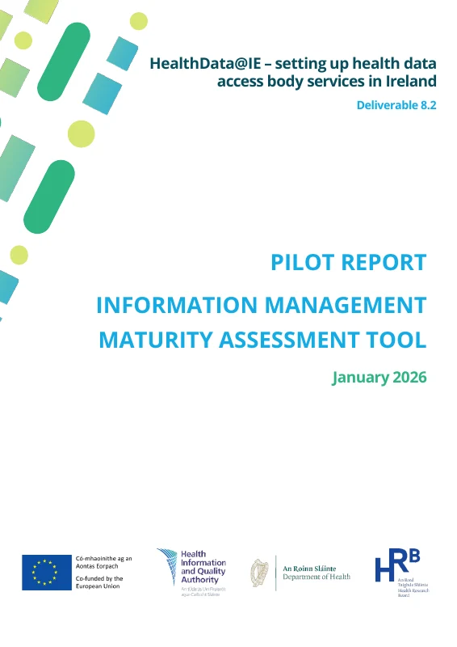

Two new HIQA pilot reports explore how health data holders can assess information management maturity and prepare for data quality review. This collection makes their findings easier to navigate, challenge and put into practice.
Two HIQA source reportsThree companion resourcesEHDS secondary use
Start with practical implications, examine the evidence behind them, or work through a proposed technical approach to recording readiness.
01 · Practical interactive guide
EHDS Readiness for Data Holders
An accessible account of what the two tools do, what the pilot studies found and what data holders can prepare now. Includes an interactive timeline, dataset-level self-check and practical preparation checklist.
Best for data holders, service leaders and teams starting their EHDS preparation.
Compare the two reports and explore the limits of aggregate maturity scores. Interactive elements examine scoring, relationships between the tools, label coverage, and the difference between process and evidence.
Best for architects, policy teams, governance specialists and critical reviewers.
A proposed, non-normative technical specification for assessing readiness for a particular dataset release. Includes criteria, traceability, process and evidence ratings, and a browser-based demonstrator with draft exports and validation feedback. Its evidence states do not grade dataset quality.
Best for technical implementers, data stewards and consultation reviewers. Status: provisional proposal, v0.1.
The third resource is not the official Data Quality and Utility Label, a HIQA tool, or a compliance certification. Its proposed criteria and prototype exports are not compliance assessments. They require review against the forthcoming label implementing acts and future HIQA guidance.
Why these resources belong together
The distinction that matters
Read together, the reports expose a practical challenge for EHDS preparation: describing an organisation's capabilities is not the same as demonstrating the condition of a particular data release.
01
Maturity is not conformance
The IMMAT is a high-level self-assessment against 12 national information management standards. A maturity score is not evidence that an individual dataset meets particular quality criteria.
02
Practices are not outcomes
The CAF-DQ pilot found that participants could often describe data quality processes but struggled to measure and report outcomes consistently across the proposed dimensions.
03
Accountability crosses boundaries
Provenance and data quality evidence may depend on upstream providers. The proposed readiness approach records those dependencies rather than treating every gap as within the holder's direct control.
Primary evidence
Read the original HIQA reports
These are the two official publications on which the companion resources are based. The PDFs are included unchanged for direct reference.

HealthData@IE · Deliverable 8.2 · January 2026
Information Management Maturity Assessment Tool (IMMAT)
Pilot with four data holders, focused on usability, applicability and feedback on a self-assessment tool based on the 2024 National Standards for Information Management.
Compliance Assessment Framework for Data Quality (CAF-DQ)
Pilot with three data holders, testing the practical applicability of 12 proposed data quality dimensions. The pilot did not assess actual organisational compliance.
Both reports were published publicly by HIQA on 9 November 2026. The PDF cover dates identify the report deliverables rather than the public publication date.